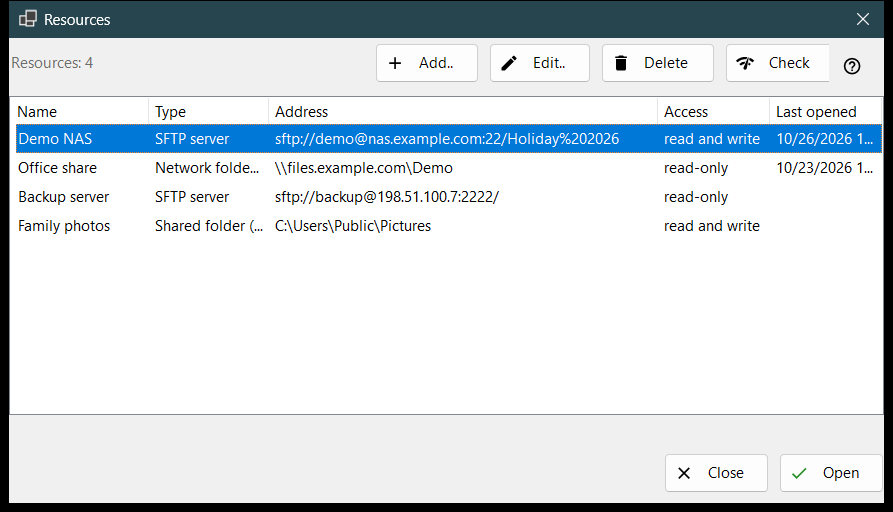
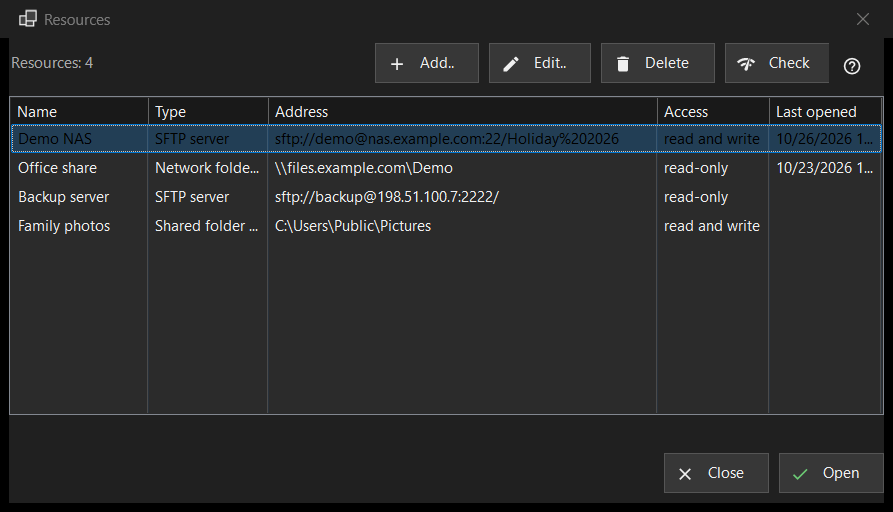

Resources
What this is for
The list of servers and network folders the viewer can open: SFTP servers, Windows network folders (SMB) and folders that Share Manager shares from this computer. It opens from «Manage resources..» in the folder menu; the same list sits on the «Server and resources» page of the Settings window.


In this order
- Press «Add..» and fill in the server, or bring a settings file in through the «More» button.
- Select the new row and press «Check».
- Press «Open», or double-click the row: the viewer connects and shows the server's folder.
- Use «Edit..» to change an address or a password and «Delete» to forget a resource.
The elements
The list
Columns: Name, Type, Address, Access and Last opened. Type is «SFTP server», «Network folder (SMB)» or «Shared folder (Share Manager)»; Access says «read-only» or «read and write». A line under the list counts the resources, and with none the window shows a hint and an «Add..» button. Edit, Delete and Check (and Open in the bottom row of the Resources window) need a selected row; until then their tooltip says «Select a resource in the list first».
Add.. and Edit..
«Add..» opens the form of a new resource and «Edit..» the form of the selected one. A password typed there is stored encrypted for your Windows account, never in the list itself.
Delete
«Delete» asks first, and the default answer is No. The question names the resource and says that the password saved for it goes too, while files on the server are not affected.
Check
«Check» tests the selected row without opening it. For an SFTP server it tries every known address of the resource and reports each as host:port with a verdict: one live SSH answer makes the check a success, an open port that is not SSH is a warning, silence is a failure. No password is sent. For a network folder it opens the share with the saved password and reads its top folder; if no password is saved it asks you to enter one through «Edit..». For a Share Manager row it only looks whether the folder exists on this computer.
Open
«Open», or a double-click on a row, hands the resource to the viewer, which connects and shows its folder. If no password is saved, or the saved one is refused, a small window asks for it first.